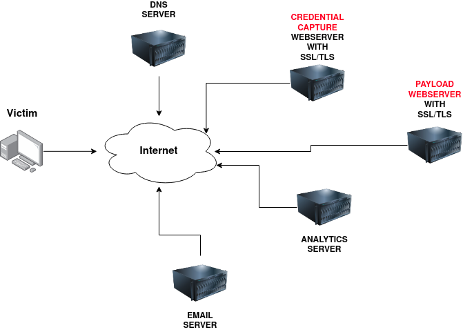
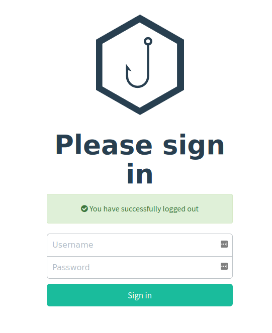
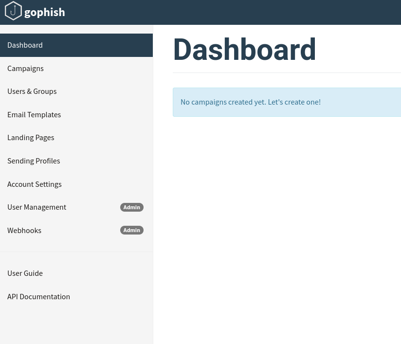
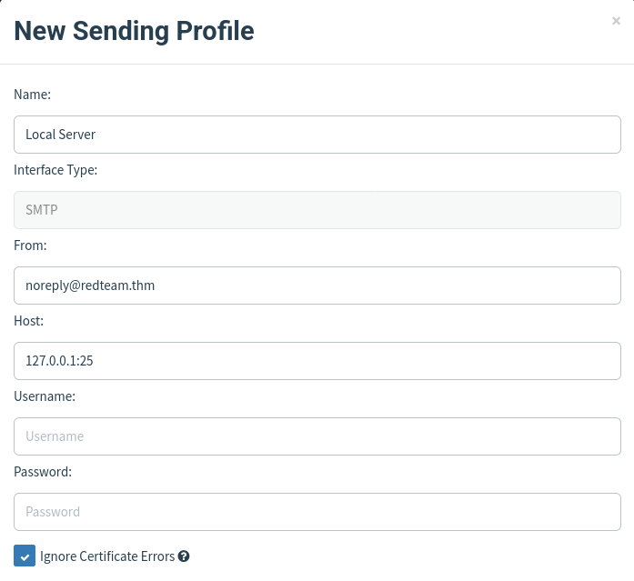
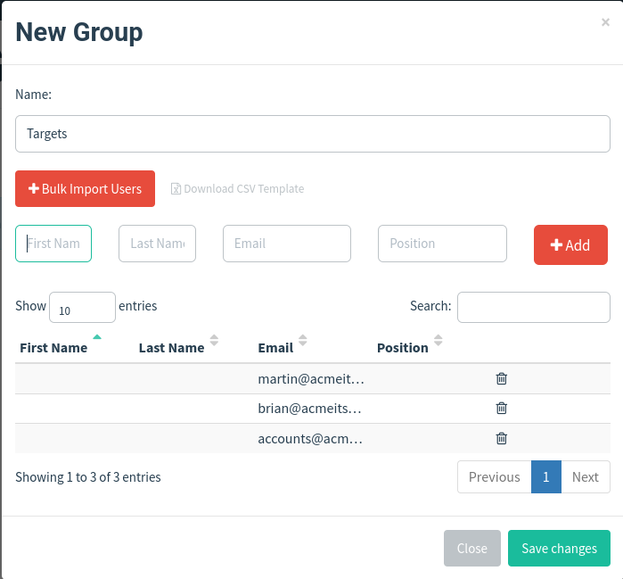
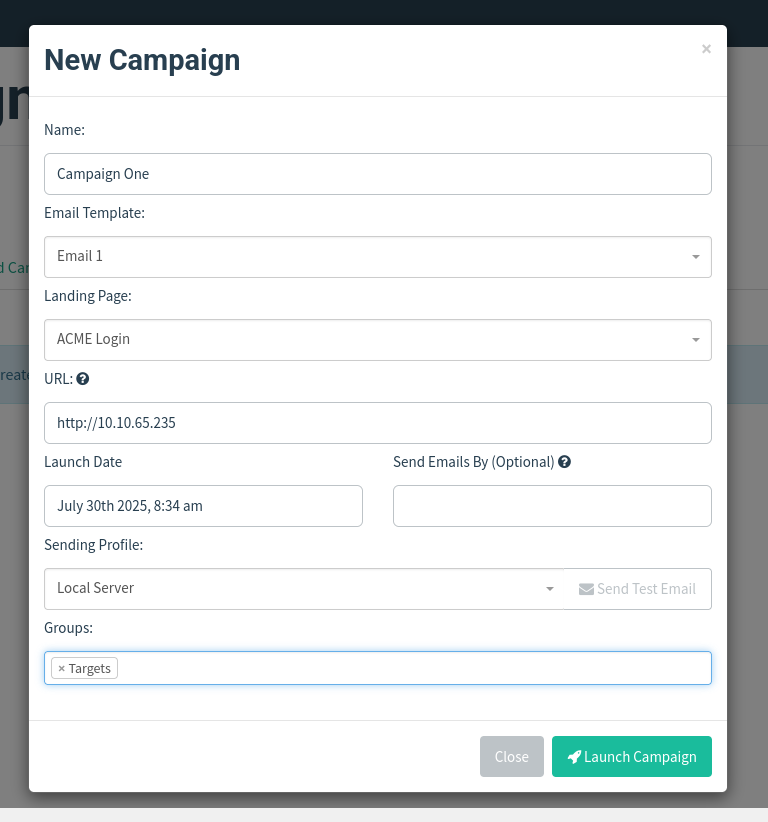
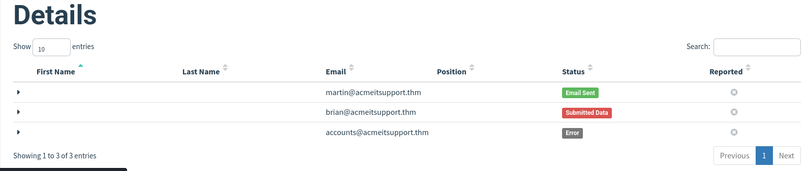
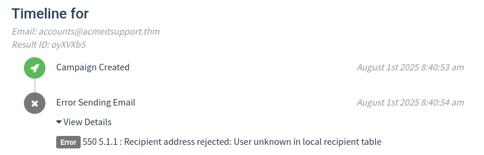
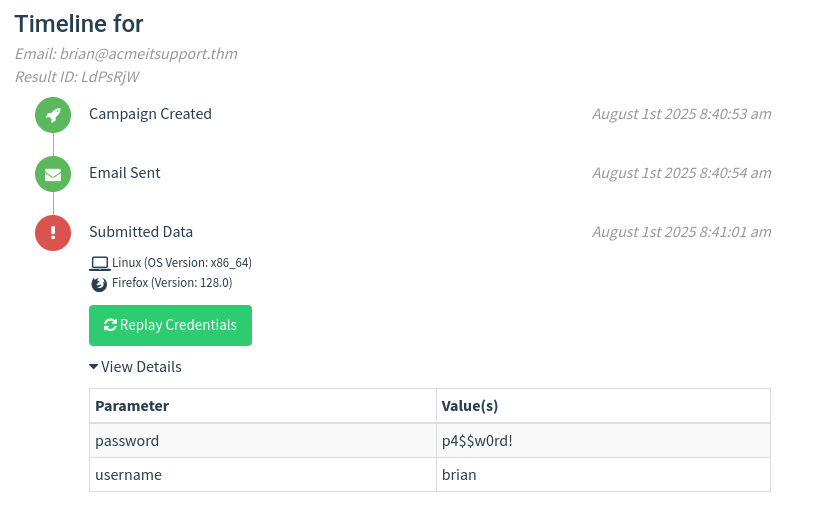
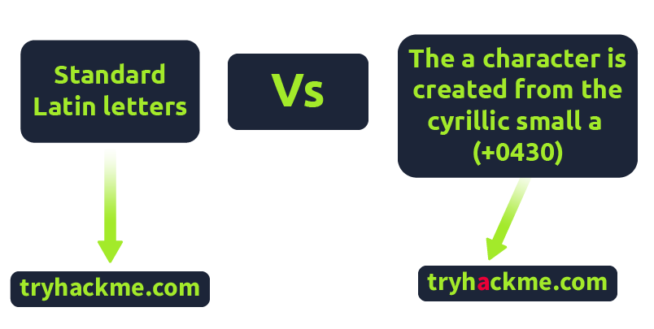

Phishing
Phishing is closely related to the term social engineering.
Social engineering refers to taking advantage of the weaknesses in human nature, in order to manipulate another person into performing or divulging information.
These weaknesses include curiosity, jealousy, greed, or even kindness.
Phishing is a source of social engineering delivered through email to trick someone into either revealing personal information, credentials, or even executing malicious code on their computer.
These emails usually come from an apparently trusted source. They include content that tries to tempt or trick people into downloading software, opening attachments, or following links to a bogus website.
A common type of phishing campaign would be spear-phishing. Just like throwing an actual spear, there is a target to aim at in this case, except that we’re aiming at targeting an individual or business. This form of phishing is effective for a red team engagement since it is hard to detect by technology such as spam filters, antivirus and firewalls.
Some other forms of phishing through other mediums are:smishing (phishing through SMS messages)
vishing (phishing through phone calls)
Example Scenario:
The below example scenario shows how an employee of a company could be tricked into revealing their credentials.
The attacker locates the physical location of the target business.
The attacker then looks for nearby food suppliers and discovers a company called Ultimate Cookies!
The Attacker registers the domain name ultimate-cookies.thm
The attacker then crafts an email to their target, tempting them with an offer of receiving some free cookies if they sign up to the website. Because the victim has heard of this local company, they are more likely to trust it.
The victim then follows the link in the email to the fake website created by the attacker and registers online. To keep things simple, the victim reuses the same password for all their online accounts.
The attacker now has the victim's email address and password and can log onto the victim's company email account. The attacker could now have access to private company information and also have somewhere to launch another phishing attack against other employees.
Writing a convincing phishing email
When it comes to working with phishing emails, we have three elements:The sender’s email address, the subject, and the content.
**The sender’s email address:**The sender’s address should be from a domain name that spoofs a known contact, coworker, or a significant brand.
To find out what brands or people a victim interacts with, we can employ OSINT (Open Source Intelligence) tactics.
For example, we can observe their social media account (if public) to see for any brands or friends they talk to. We can search Google for the victim’s name and rough locations to see if they left any review on local businesses or brands.
We can also use social media like Linkedin to learn more about the victim’s coworkers.
**The subject:**The subject should be set to something urgent, worrying or that piques the victim’s curiosity, so that they don’t ignore it and act on it quickly.
Some examples could be email subjects like:1. Your account has been compromised
Your package has been dispatched/shipped
Staff payroll information (do not forward!)
Your photos have been published.
**The content:**If impersonating a brand or supplier, it’s useful to research their standard email templates and branding (style, logos, images etc) and make your content look the same as theirs, so the victim does not expect anything.
If impersonating a contact or coworker, it would be beneficial to contact them. They may have some branding in their template, have a particular email signature or even something small like how they refer to themselves. For example, someone might have the name Dorothy and their email is dorothy@company.thm. Still, in their signature, it might say "Best Regards, Dot"
If you've set up a spoof website to harvest data or distribute malware, the links to this should be disguised using the anchor text and changing it either to some text which says "Click Here" or changing it to a correct looking link that reflects the business you are spoofing, for example:
Click Here
Phishing Infrastructure
A certain amount of infrastructure will need to be put in place to launch a successful phishing campaign.
**Domain Name:**We will need to either register an authentic-looking domain name or one that mimics the identity of another domain.
**SSL/TLS Certificates:**Creating SSL/TLS certificates for your chosen domain name will add an extra layer of authenticity to the attack.
**Email Server/Account:**Either an email server will need to be set up, or we can register with an SMTP email provider.
**DNS Records:**Setting up DNS records such as SPF, DKIM, DMARC will improve the deliverability of your emails and make sure they’re getting into the inbox rather than the spam folder.
**Web Server:**You’ll need to set up a webserver or purchase web hosting from a company to host your phishing services. Adding SSL/TLS services to the websites will give them an extra layer of authenticity.
**Analytics:**When a phishing campaign is part of a red team engagement, keeping analytics information is important. You’ll need something to keep track of emails that have been sent, open or clicked. We also need to combine it with information from the phishing websites for which users have supplied personal information or downloaded software.
Automation and Useful Software
Some of the above infrastructures can be quickly automated by using the tools below:
GoPhish - (Open Source Phishing Framework) getgophish.com
GoPhish is a web-based framework that makes setting up phishing campaigns more straightforward.
Go Phish allows you to store your SMTP server settings for sending emails, it has a web-based tool for creating email templates using a simple WYSIWYG (What You See Is What You Get) editor. You can also schedule when emails are sent and have an analytics dashboard that shows how many emails have been sent, opened or clicked.
SET (Social Engineering Toolkit) trustedsec.com
The Social Engineering Toolkit contains a multitude of tools, but some of the important ones for phishing are the ability to create spear-phishing attacks and deploy fake versions of common websites to trick victims into entering their credentials.

- DNS Server
Resolves attacker-controlled domains (e.g., login-secure.com) to the correct malicious IPs.
May also be used to log DNS queries for analytics or exfiltration techniques (e.g., DNS tunneling).
- Credential Capture Webserver (SSL/TLS)
This is a phishing site, disguised as a legitimate login portal (e.g., Gmail, Office365).
Uses SSL/TLS to appear trustworthy (https:// with a padlock).
Captures credentials submitted by the victim.
- Payload Webserver (SSL/TLS)
Hosts malicious payloads, e.g.,:
Malware EXE/DLL
Office documents with macros
Scripts (PowerShell, JS)
Uses SSL/TLS to avoid detection by some security tools.
- Analytics Server
Collects telemetry data, such as:
Victim’s IP, browser, OS
Whether they clicked a link or opened a file
Time of interaction
Helps operators measure campaign effectiveness.
- Email Server
Sends phishing emails with malicious links or attachments.
May use spoofed sender domains to appear legit (e.g., admin@securebanking.com).
Using GoPhish


After logging in, we can see the site’s dashboard:We will now create a new Sending Profile.
Sending Profiles are the connection details required to actually send the phishing emails. This is simply a SMTP server that you have access to. Clicking the Sending Profiles link on the left-hand menu and then the “New Profile” button will create a new profile.

Landing Pages
We will now set up the landing page. This is the website that the Phishing email will direct the victim to. This is usually a spoof of the website that the victim is familiar with.
To do this we click the Landing Pages link on the left-hand menu and then click the “New Page” button. Then, we name it and press the Source button to enter the required HTML code.
We should also check the Capture Submitted Data and Capture Passwords boxes, and then save the page.
Email Templates
This is the content of the email we’ll send to the victim. It will need to contain a link to the landing page so we can capture victim credentials.
We click the Email Templates link on the left hand menu and then click the New Template button. After enabling the HTML editor mode, we write a persuasive email to get the victim to click a link. The link text will need to be a legitimate link, but the actual link will need to be set to {{.URL}} which will get changed to our spoofed landing page when the email gets sent.
We can do this by highlighting the link text and then clicking the link button on top of the row of icons, and then set the protocol to
Users & Groups
This is where we can store the email addresses of our intended targets.
Click the Users & Groups link on the left-hand menu and then the New Group button. Give the group a name and then add some email addresses. Then save the template.

Campaigns
Now it is time to send the first phishing emails.
We click the Campaigns link on the left-hand menu, and the New Campaign.
Then we input data as needed.

We will now be redirected to the results page for our campaign.
ResultsThis page gives an idea of how our campaign is doing by letting us know how many emails have been delivered, opened, clicked and how many users have submitted data to our spoof website.
You’ll see at the bottom of the screen a breakdown for each email address.
Here, you’ll notice that two of our emails have been sent successfully, but on one occasion we have an error.

We can look further into the arrow by clicking the dropdown arrow next to the account row and viewing details etc.
In this case, it says the user is unknown.

That just means that the user does not exist.
Anyways, let’s focus on the use that actually submitted a set of credentials on the spoofed page, which got sent to our server:

Droppers
Droppers are software that phishing victims tend to be tricked into downloading and running into their system. The dropper advertises itself as a useful file or something legitimate like a codec to view a certain video or software that is needed to open a specific file.
The dropper is not malicious itself, so they tend to pass antivirus checks.
Once installed, then the intended malware is either unpacked or downloaded from a server and installed onto the victim’s computer. Then this malicious software then connects back to the attacker’s infrastructure.
The attacker can take control of the victim’s computer, which can then further explore and exploit the local network.
Choosing a phishing domain
Choosing the right Phishing domain to launch your attack from is essential to ensure you have the psychological edge over your target. A red team engagement can use some of the below methods for choosing the perfect domain name.
Expired Domains:
Although not essential, buying a domain name with some history may lead to better scoring of your domain when it comes to spam filters. Spam filters have a tendency to not trust brand new domain names compared to ones with some history.
Typosquatting:
Typosquatting is when a registered domain looks very similar to the target domain you're trying to impersonate. Here are some of the common methods:
Misspelling: goggle.com Vs google.com
Additional Period: go.ogle.com Vs google.com
Switching numbers for letters: g00gle.com Vs google.com
Phrasing: googles.com Vs google.com
Additional Word: googleresults.com Vs google.com
These changes might look unrealistic, but at a glance, the human brain tends to fill in the blanks and see what it wants to see, i.e. the correct domain name.
**TLD Alternatives:**A TLD (Top Level Domain) is the .com .net etc. part of the domain name. There are hundreds of variants.
A common trick for choosing a domain would be to use the same name but with a different TLD. For example, register tryhackme.co.uk to impersonate tryhackme.com
IDN Homograph Attack/Script Spoofing:
Originally domain names were made up of Latin characters a-z and 0-9, but in 1998, IDN (internationalized domain name) was implemented to support language-specific script or alphabet from other languages such as Arabic, Chinese, Cyrillic, Hebrew and more. An issue that arises from the IDN implementation is that different letters from different languages can actually appear identical. For example, Unicode character U+0430 (Cyrillic small letter a) looks identical to Unicode character U+0061 (Latin small letter a) used in English, enabling attackers to register a domain name that looks almost identical to another.

Using MS Office in Phishing
Often during phishing campaigns, a Microsoft Office document (typically Word, Excel or PowerPoint) will be included as an attachment. Office documents can contain macros; macros do have a legitimate use but can also be used to run computer commands that can cause malware to be installed onto the victim's computer or connect back to an attacker's network and allow the attacker to take control of the victim's computer.
Using browser exploits
Another method of gaining control over a victim's computer could be through browser exploits; this is when there is a vulnerability against a browser itself (Internet Explorer/Edge, Firefox, Chrome, Safari, etc.), which allows the attacker to run remote commands on the victim's computer.
Browser exploits aren't usually a common path to follow in a red team engagement unless you have prior knowledge of old technology being used on-site. Many browsers are kept up to date, hard to exploit due to how browsers are developed, and the exploits are often worth a lot of money if reported back to the developers.
That being said, it can happen, and as previously mentioned, it could be used to target old technologies on-site because possibly the browser software cannot be updated due to incompatibility with commercial software/hardware, which can happen quite often in big institutions such as education, government and especially health care.
Usually, the victim would receive an email, convincing them to visit a particular website set up by the attacker. Once the victim is on the site, the exploit works against the browser, and now the attacker can perform any commands they wish on the victim's computer.
An example of this is CVE-2021-40444 from September 2021, which is a vulnerability found in Microsoft systems that allows the execution of code just from visiting a website.